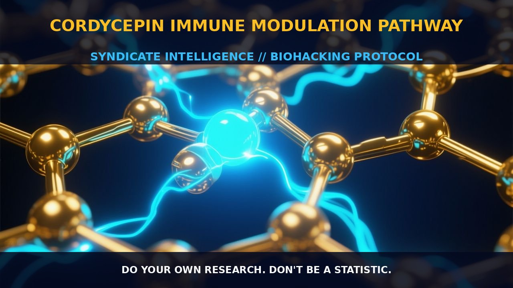

Cordycepin: Mechanisms and Applications in Immune Modulation and

1. The Mechanism
Cordycepin, a bioactive nucleoside derived from the fungus Cordyceps militaris, has garnered significant attention for its multifaceted effects on immune modulation and cancer therapy. It operates through several mechanisms, including the modulation of immune checkpoint pathways, regulation of signaling cascades such as PI3K/AKT/FOXO3, and enhancement of microglial polarization.
One of the primary mechanisms involves the targeting of the ubiquitin E3 ligase HRD1, which facilitates the degradation of the PD-L1 protein via the ubiquitin-proteasome pathway. By downregulating PD-L1, cordycepin enhances the cytotoxic activity of effector T lymphocytes against cancer cells, thereby boosting antitumor immunity.
Cordycepin has also been shown to suppress the expression of p-PI3K/PI3K, p-AKT/AKT, and Bcl-2, while upregulating the expression of FOXO3, Caspase-3, Bax, Caspase-9, and Cyt-C. These actions collectively contribute to the induction of apoptosis and inhibition of cell proliferation in cancer cells.
Furthermore, cordycepin's ability to modulate the gut microbiota and immune cell function is another critical aspect of its immune modulation pathway, particularly in the context of sepsis-associated encephalopathy. It exerts its effects through the IL-17a/IL-17RA/NF-κB axis, which plays a pivotal role in the pathogenesis of sepsis-associated encephalopathy. By reducing peripheral Th17 cell expansion and downregulating IL-17RA/NF-κB signaling, cordycepin promotes microglial polarization towards the anti-inflammatory M2 phenotype, thereby mitigating neuroinflammation.
This mechanism not only alleviates cognitive deficits but also restores gut microbial diversity disrupted by sepsis, further enhancing its neuroprotective effects. The multifaceted actions of cordycepin, including its ability to target multiple signaling pathways and immune checkpoints, make it a promising candidate for the immunotherapy of various diseases.
2. Biological Leverage
The biological leverage of cordycepin extends beyond its direct actions on immune checkpoints and signaling pathways. By targeting HRD1 and promoting PD-L1 degradation, cordycepin enhances the effectiveness of immune checkpoint inhibitors and T-cell mediated cytotoxicity against cancer cells. This modulation of the PD-L1 pathway is critical in increasing the immune system's ability to recognize and eliminate tumor cells.
Moreover, the ability of cordycepin to enhance the expression of immune factors such as IL-18 and IL-1β, while inhibiting the expression of p-PI3K/PI3K and p-AKT/AKT, contributes to its anti-cancer effects. The PI3K/AKT/FOXO3 signaling pathway is particularly important in regulating cell survival and proliferation, and cordycepin's modulation of this pathway further supports its efficacy in cancer therapy.
In the context of sepsis-associated encephalopathy, cordycepin's ability to suppress peripheral Th17 cell expansion and downregulate IL-17RA/NF-κB signaling provides significant neuroprotective benefits. By promoting microglial M2 polarization and reducing neuroinflammation, cordycepin mitigates cognitive deficits and restores gut microbial diversity, thereby enhancing overall brain function.
The gut-immune-brain axis plays a crucial role in the pathogenesis of sepsis, and cordycepin's modulation of this axis offers a promising therapeutic strategy for sepsis-related cognitive impairment. Additionally, cordycepin's modulation of adenosine receptors, particularly the A3 adenosine receptor (A3AR), further enhances its immune-modulating effects, contributing to its potential as a novel therapeutic agent in cancer management.
3. Tactical Implementation
When implementing cordycepin for immune modulation and cancer therapy, it is essential to consider the dosage and timing of administration. The optimal dose of cordycepin may vary depending on the individual's health status and the specific condition being addressed. Low-to-moderate amounts of cordycepin are generally well-tolerated, and the compound can be administered orally or intravenously.
For cancer therapy, cordycepin is often used in combination with other therapeutic modalities such as photodynamic therapy (PDT) to enhance the anti-cancer effect. The combination of PDT and cordycepin has been shown to increase apoptosis, inhibit cell growth, and enhance the production of immune factors, making it a promising strategy for esophageal cancer treatment.
In the context of sepsis-associated encephalopathy, cordycepin can be administered to mitigate neuroinflammation and cognitive deficits. The timing of administration is critical, with early intervention providing the best outcomes. Cordycepin can be stacked with other immune-modulating agents such as thymosin alpha 1 (Tα1) to enhance its effects. Tα1, a naturally occurring polypeptide, activates the tolerogenic pathway of tryptophan catabolism and potentiates immune tolerance mechanisms, synergizing with cordycepin to break the vicious circle of chronic inflammation.
Additionally, reishi mushroom (Ganoderma lucidum) can be used to modulate gut microbiota and immune cell function, further supporting the immune-modulating effects of cordycepin.
Prostar Life Hack
Cordycepin can be used in combination with thymosin alpha 1 (Tα1) to enhance its neuroprotective and immune-modulating effects, making it a promising strategy for sepsis-related cognitive impairment and cancer therapy.
[ AUTHOR: LEAD TECHNICAL RESEARCHER ]